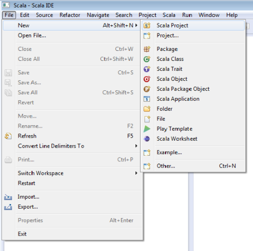
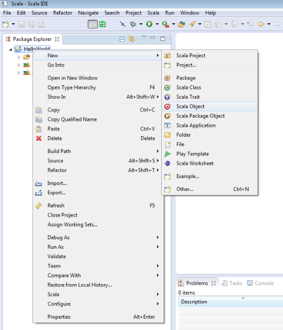
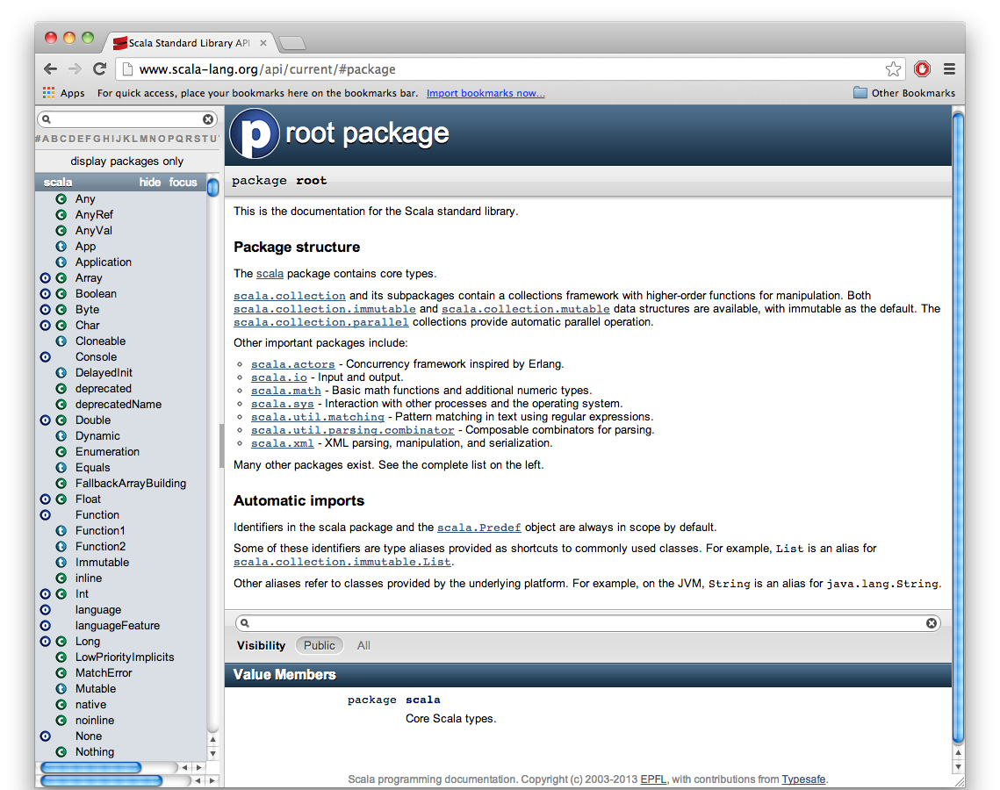
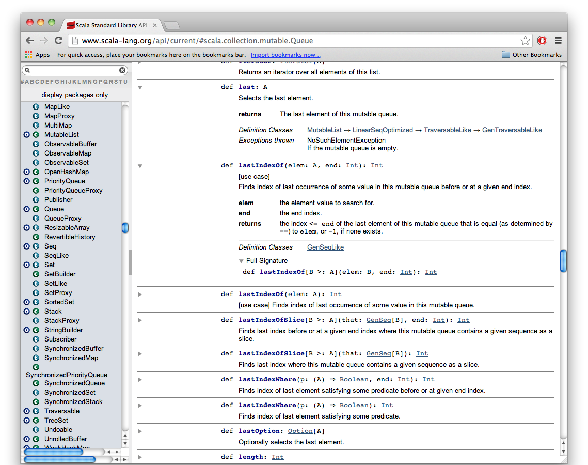
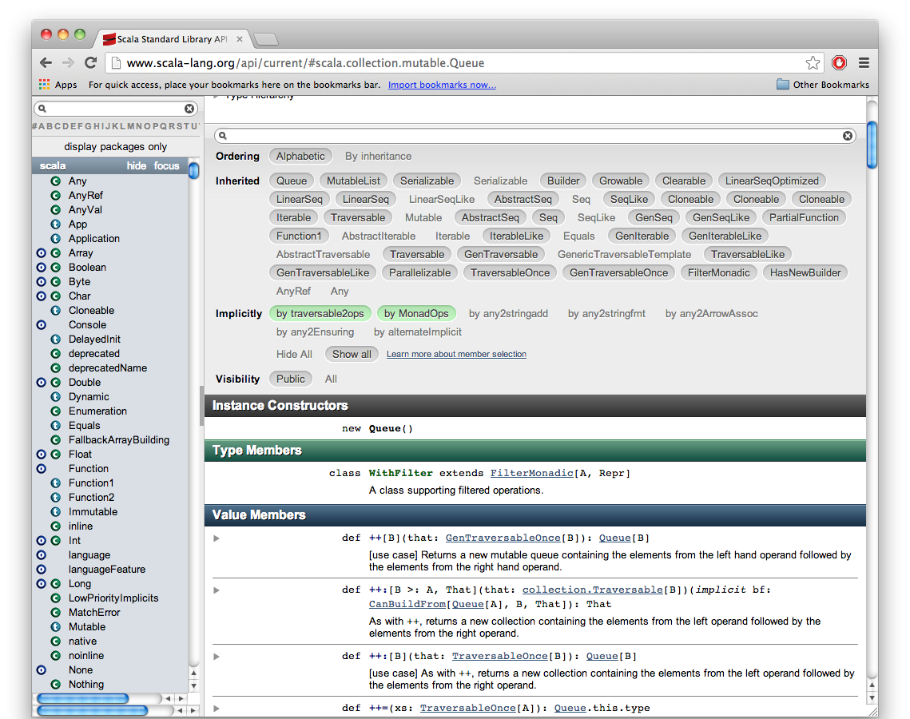

Getting Started With Scala
Linux
Download the Scala source code, from Scala's website
Unpack the tgz file using
$ tar -zxvf scalaDistroAdd an environment variable with the Scala path directory
$ export SCALA_HOME=/path/to/scala/distroAdd the Scala bin directory to your path with
$ PATH=$PATH:$SCALA_HOMEEnsure that everything works by using
$ scala -versionGet the Eclipse Scala IDE here
Check out the API here
Mac
Download the Scala source code, from Scala's website
Unpack the tgz file using
$ tar -zxvf scalaDistroAdd an environment variable with the Scala path directory
$ export SCALA_HOME=/path/to/scala/distroAdd the Scala bin directory to your path with
$ PATH=$PATH:$SCALA_HOMEEnsure that everything works by using
$ scala -versionGet the Eclipse Scala IDE here
Check out the API here
Windows
Download the Scala source code, from Scala's website
Realize that Windows is not good for development, reformat, download and install Ubuntu
Send an email thanking the creators of this website for showing you the awesomeness of Ubuntu then click here to see the install instructions for Ubuntu.
Hello World in the Scala IDE for Eclipse
Now that you’ve downloaded the Scala IDE for Eclipse, run it and select File > New > Scala Project as shown below:
This should open the New Project Wizard. Enter “HelloWorld” into the project name field and click Finish.
Next, in the Package Explorer, right-click the project “HelloWorld” and select New > Scala Object:
Now, modify the auto-generated file to read as follows:
object HelloWorld {
def main(args: Array[String]) {
println("Hello, world!")
}
}
Finally, click the run button in the toolbar up top:
View the results of your program in the console output window at the bottom of the IDE. Congratulations, you’ve created your first Scala program!
Command Line Arguments in Scala
Now, we will learn how to read the command line arguments by a simple program called “addTwoNumbers”
First, follow the steps above to create the project addTwoNumbers
Modify the auto-generated file to read as follows:
object addTwoNumbers {
def main(args: Array[String])
{
println("Adding the first two arguments")
var i: Int=args(0).toInt
var j: Int=args(1).toInt
var sum: Int= i+j
println("The sum of two arguments is " + sum)
}
}
In the example above, the program reads the integers typed in by users as command line arguments. In Scala, command line arguments are stored in array named "args."
Note that Scala supports type reference, we can declare variables i, j, and sum as
var i =args(0).toInt
var j =args(1).toInt
var sum = i+j
How to use the Scala API
The API (Application Programming Interface) is located here
The Scala API documents all Scala classes with associated class methods. You use the API to find different classes that can be used in your programs. The API will tell you how to use the class and what an object created from that class can do. Then you can import that class to your program and use it.
By default the API starts at the root package that documents the Scala standard library.
The root package tells you about what is included in important Scala packages like the scala package, the scala.collection package, and the scala.io package:
On the far left of the Scala API is a scrollable list that contains all Scala classes, Singleton objects, and traits organized by the package name. There is also a search bar for easily finding them as well.
A Scala class, Singleton object, and/or trait with the same name are different things. In the scrollable list, the letters in the circle(s) next to a name represent a clickable link for the class, Singleton object, and/or trait documentation of the name.
For example, a circle with an 'o' next to Array represents the link to the API of Singleton object Array. A circle with a 'c' also next to Array represents the link to the API of the class Array. A circle with a 't' next to Cloneable represents the link to the API of the trait Cloneable.
If you are familiar with Java, classes in Scala are just like classes in Java. They are the design for the object. Like a design for a car or a house that can be used to create as many houses and cars you want.
The objects in the Scala API are Singleton objects. They are used for invoking Java-like static methods because you cannot have static classes, variables, or methods in Scala.
For example, instead of writing a Color class and then creating an instance of that class with a reference variable and running methods like:
val col = new Color("Blue")
col.turnBright()
you simply write a Color Singleton object with defined methods. And you invoke methods like this:
Color.turnBright()
Singleton object methods can also be used in other classes.
Traits are like Interfaces in Java but you can have non-abstract methods in them. Traits are used to add pre-defined methods/variables or method/variable declarations to be defined later to a class that extends them.
Just like Java, a Scala class can extend 1 class but have multiple traits
As a demonstration on how to use the Scala API, let's learn about the Queue class in the scala.collection.mutable package:

We can find the API for the Queue class by scrolling through the list on the left and find Queue under the scala.collection.mutable subheading. We then click the circle next to it with 'c' on it or just click the name to view the Queue class API:

The top of the API for the Queue class tells us what class Queue extends and what traits it uses.
Underneath that, the API tells us the version, supertypes (superclasses), subclasses, and a type hierarchy graphic for the class.
From the type hierarchy we can easily see that Queue extends the MutableList class and implements 4 traits. We can even see what classes extend Queue as well.
And all throughout the Queue API, we can click on all class names, singleton object names, and trait names to be redirected to the API document of the clicked class, singleton object, or trait.
As we scroll through the API we see all methods Queue can invoke including the ones inherited from Linear Supertypes going all the way up to the root class Any and the different traits. We see a description for what each method does, what each method returns, and how to invoke them with the proper parameters.
We can click on the drop down arrow on the upper left corner of a method description box to get more information about the parameters, return types, and other important information:
We can even organize the long list of methods to only show ones that were inherited from certain classes or traits by clicking the appropriate classes or traits whose methods we want to show in this selection box:
This box also allows us to search for methods as well and change the ordering of the method list from Alphabetic to By Inheritance.
After learning about the Queue class we can import it into our Scala program using
import scala.collection.mutable.Queue
or
import scala.collection.mutable._
If we want to use all classes, traits, and singleton objects in the scala.collection.mutable package.
In Scala, the import statement can go anywhere in the program.
And in every program, Scala implicitly imports java.lang and scala packages and the Predef object.
The Predef object contains many definitions of types, methods, and implicit conversions that are commonly used in Scala programs.
So we don't have to write:
import java.lang._ import scala._ import Predef._
Now you know how to use the Scala API :)